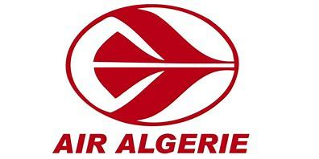
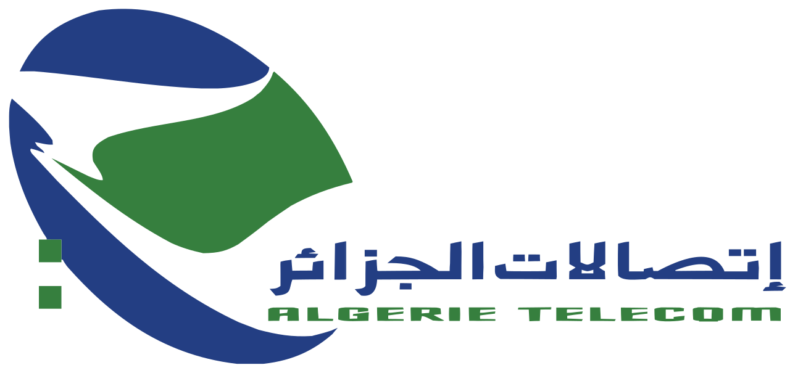

| Age: 23 ans |
|---|
| Addresse:8 Rue francis de croisset,75018 PARIS |
| Tel:0766751570 |
| email: kamaltalatizi98@gmail.com |
| 2022_2022 | Master 2 innovation en imagerie et réseaux informatique |
| 2020_2021 | Master 1 i nnovation en imagerie et réseaux informatique |
| 2019_2020 | Diplome 3éme année Licence en science pour l'ingénieur |
| 2016_2019 | diplome Licence en Electronique |
| juin 2018 Apprenti technicien maintenance aéronautique | Test et réparation des cartes électroniques en laboratoire (oscilloscope, multimètre, soudage) Utilisation des bancs de Test pour le diagnostic des pannes des équipements de bord |
| janvier 2017 stagier Algérie Télécom Stage | Familiarisation avec les différentes installations des réseaux ADSL, 3G, 4G, fibre optique. Configuration des routeurs Cisco. |
| Programation | C/C++,JAVA,HTML5,CSS3,Javascript,MySQL,MATLAB |
|---|---|
| réseaux | IPV4,IPV6,Vlan,RIP,OSPF,QOS,ARTP,TCP/IP,FTP,BOOTP |
| Télécominication | 2G,3G,4G,CDMA,FDMA,TDMA |
| Logiciel | Cisco Packet tracer, wireshark, Maven, Visuel Studio, Sublime text, Orcal |